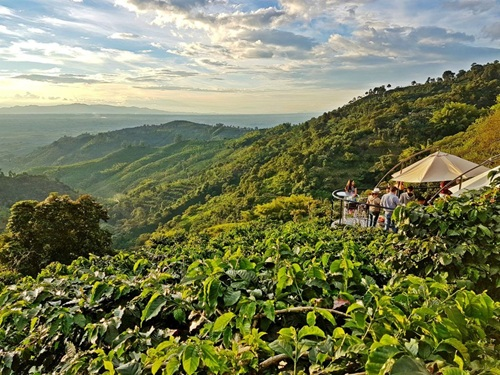
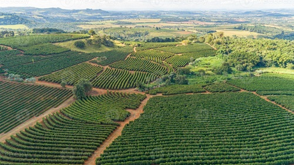
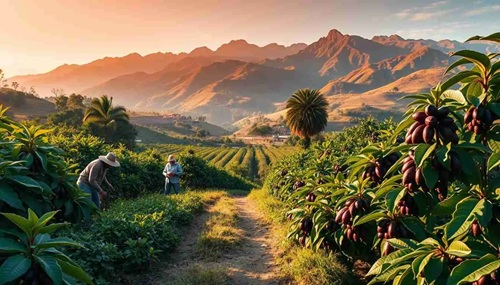

At The Farmhouse, our coffee story begins far beyond the walls of our café. It starts in the lush, mountainous regions of Colombia, the sun‑drenched hills of Brazil, and the misty highlands of Peru—three countries whose landscapes and traditions have shaped some of the world’s most extraordinary coffee.
From the beginning, John and Marlene believed that great coffee must come from farms that honor the land, respect their workers, and cultivate beans with patience and care. Their commitment led them on a journey across South America, where they met with growers who shared their values and passion for sustainable agriculture.

Nestled in the Andes, Finca Montaña Clara is a family‑run farm known for its shade‑grown Arabica beans. The farmers use natural composting, protect native bird habitats, and hand‑pick each cherry at peak ripeness. John and Marlene visit twice a year, walking the steep terraces and sharing meals with the Montoya family, who have been cultivating coffee for three generations.

In the rolling hills of Minas Gerais, Fazenda Rio Dourado produces rich, nutty beans using water‑efficient irrigation and soil‑restoration techniques. The farm’s owner, Ana Ribeiro, has pioneered environmentally responsible drying methods that reduce waste and preserve flavor. John and Marlene often spend a week here, learning new techniques and ensuring that every harvest meets their strict quality standards.

High in the Peruvian highlands, the Altos del Sol Cooperative brings together dozens of small growers who share resources, training, and sustainable farming practices. Their beans are known for bright citrus notes and a clean finish. John and Marlene frequently travel to the cooperative’s remote villages, meeting with growers and verifying that every batch is produced with care, fairness, and environmental respect.
These journeys are not just business—they are a promise. A promise that every cup served at The Farmhouse reflects the dedication of farmers who nurture their land, the passion of growers who protect their traditions, and the commitment of John and Marlene, who personally ensure that our coffee remains the purest and highest quality available on the planet.